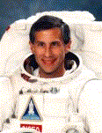

Lyndon B. Johnson Space Center
Houston, Texas 77058
|
National Aeronautics and Space Administration Lyndon B. Johnson Space Center Houston, Texas 77058 |
 |
Biographical Data |
||
Jay Apt (Ph.D.)
NASA Astronaut (Former)
PERSONAL DATA: Born April 28, 1949, in Springfield, Massachusetts, but considers Pittsburgh, Pennsylvania, to be his hometown. Married to the former Eleanor B. Emmons. They have two daughters. He enjoys flying, scuba diving, camping, photography, model rocketry, and amateur radio.
EDUCATION: Received a bachelor of arts degree in physics (magna cum laude) from Harvard College in 1971, and a doctorate in physics from the Massachusetts Institute of Technology (MIT) in 1976.
ORGANIZATIONS: Member of the American Astronomical Society (Division of Planetary Science), the American Geophysical Union, the American Physical Society, Sigma Xi, and the American Association for the Advancement of Science.
SPECIAL HONORS: Recipient of NASA Distinguished Service Medal, two NASA Exceptional Service Medals, four NASA Space Flight Medals, the Sergei P. Korolev Diploma of the Federation Aeronautique Internationale, two Komarov Diplomas of the FAI, and three NASA Group Achievement Awards. Winner of First and Second Prizes in the 1996 Aviation Week & Space Technology Magazine Space Photography Contest.
PUBLICATIONS: Dr. Apt shared his images and knowledge in the publication Earth in Orbit: NASA Astronauts Photograph the Earth, written in conjunction with NASA scientists Michael Helfert and Justin Wilkinson and published by the National Geographic Society. Results of Dr. Apt;s research in physics and planetary science have been published in over 20 papers in professional journals.
EXPERIENCE: In 1976, Dr. Apt was a post-doctoral fellow in laser spectroscopy at MIT. From 1976 to 1980 he was a staff member of the Center for Earth & Planetary Physics, Harvard University, supporting NASA’s Pioneer Venus Mission by making temperature maps of Venus from Mt. Hopkins Observatory. Dr. Apt served as the Assistant Director of Harvard’s Division of Applied Sciences from 1978 to 1980.
NASA EXPERIENCE: In 1980 Dr. Apt joined the Earth and Space Sciences Division of NASA’s Jet Propulsion Laboratory (JPL), doing planetary research, studying Venus, Mars, and the outer solar system. In 1981 he became Director of JPL’s Table Mountain Observatory. From 1982 through 1985, he was a flight controller responsible for Shuttle payload operations at NASA’s Johnson Space Center.
Dr. Apt is an instrument-rated commercial pilot, and has logged over 4,000 hours flying time in approximately 25 different types of airplanes, seaplanes, sailplanes, and human-powered aircraft.
He was selected as an astronaut candidate by NASA in June 1985, and qualified as an astronaut in July 1986. His assignments to date have included Shuttle Orbiter modification support at Kennedy Space Center, developing techniques for servicing the Hubble Space Telescope and the Gamma Ray Observatory, development of EVA (space walk) construction and maintenance techniques for Space Station, as a spacecraft communicator (CAPCOM) for Shuttle flights, the voice link between the flight crew and the Mission Control Center (MCC), and the Astronaut Office EVA point of contact. He has also been the supervisor of Astronaut Training in the Astronaut Office, and has served as Chief of the Astronaut Office Mission Support Branch.
Apt flew as a member of the crew of the space Shuttle Atlantis on the STS-37 mission, which launched from Kennedy Space Center, Florida, on April 5, 1991. During the mission, the crew deployed the Gamma Ray Observatory to study the universe by observing the most energetic form of radiation. Apt and crew mate Jerry Ross performed an unscheduled space walk during which they manually deployed the observatory’s large radio antenna when remotely controlled motors failed to do so. On the next day, they conducted the first scheduled space walk in 5-1/2 years. They tested concepts for getting around on large space structures, and gathered basic engineering data on the forces a crew member can exert on bolts and equipment. The crew also conducted research on biologically important molecules, tested concepts for radiating heat from Space Station, operated an amateur radio station, and took over 4000 photographs of the Earth. After completing 93 orbits of the Earth, the crew landed Atlantis at Edwards Air Force Base, California, on April 11, 1991.
Dr. Apt was Endeavour’s flight engineer on the crew of STS-47, Spacelab-J. This eight-day cooperative mission between the United States and Japan was launched on September 12, 1992, to perform life science and materials processing experiments in space. Dr. Apt was responsible for operating the Orbiter during one of the two shifts on this dual shift mission. After completing 126 orbits of the Earth, the crew landed Endeavour at Kennedy Space Center, Florida, on September 20, 1992.
He flew again aboard Endeavour on STS-59, the first flight of the Space Radar Laboratory, from April 9-20, 1994. As the blue shift commander, he was responsible for operating Endeavour during one of the two shifts on an 11-day mission to observe the land surface and oceans of Earth with three imaging radar systems, and to map air pollution in the lower atmosphere. The crew flew Endeavour through the largest series of maneuvers in Shuttle history to point the radar precisely at hundreds of ecology, geology, and oceanography sites, providing research scientists the equivalent of 26,000 encyclopedia volumes of data. After completing 183 orbits of the Earth, the crew landed Endeavour at Edwards Air Force Base, California.
Most recently, he served aboard Atlantis during mission STS-79, September 16-26, 1996. The crew docked Atlantis with the Russian Mir space station, having ferried supplies, personnel, and scientific equipment to this base 240 miles above the Earth. The crew transferred over 4 tons of scientific experiments and supplies to and from the Mir station and exchanged U.S. astronauts on Mir for the first time - leaving John Blaha and bringing Shannon Lucid home after her record six months stay aboard Mir. This historic mission of international cooperation and scientific research ended at Kennedy Space Center, Florida, after 160 orbits of the Earth.
With the completion of his fourth flight, Dr. Apt has logged over 847 hours (35 days) in space, including 10 hours and 49 minutes on two space walks. He has flown around the Earth 562 times.
Dr. Apt left NASA in late May to become Director of the Carnegie Museum of Natural History in Pittsburgh, Pennsylvania.
JUNE 1997
This is the only version available from NASA. Updates must be sought from the above named individual.